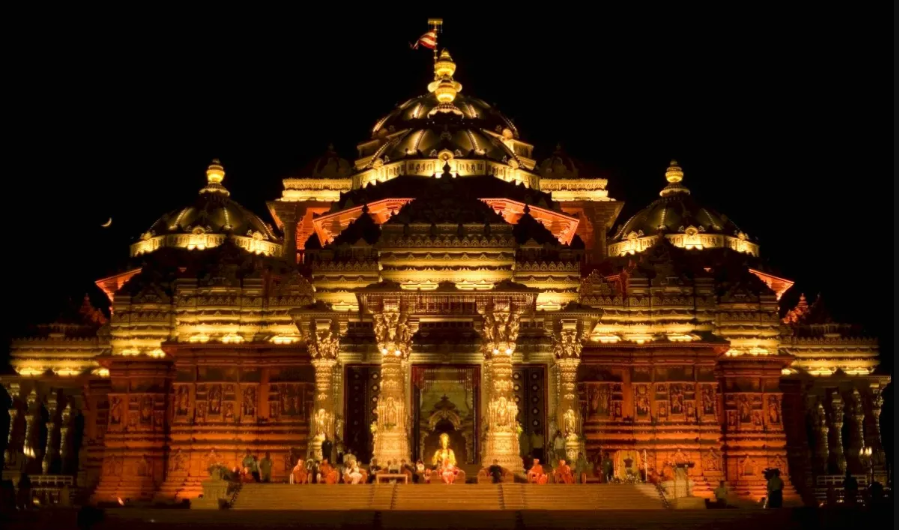

Akshardham is a majestic, intricately carved stone structure that stands amid sprawling gardens set in a 23-acre plot at Gandhinagar (Gandhinagar district). It is built in 6000 tonnes of pink sandstone and not a bit of steel has been used. The temple is 108 ft in height, 240 ft in length and 131 ft in width. A point worth noting is that this modern monument to Hinduism was built as per the injunctions of Vastu Shastra. The monument enshrining the seven-foot high, gold-leafed Murti (idol) of Lord Swaminarayan is the focal point of the complex. The monument stands on 7 sculpted pillars, 210 single-piece stone beams, 57 window grills, M domes, eight ornate zarokhas, etc. The sanctum sanctorum contains the 1.2 tonne gold-plated idol of Lord Swaminarayan, the founder of the sect that bears his name, shown in a sitting posture with his right hand raised in abhay mudra. He is flanked by Swami Gunatitanand on his right and Swami Gopalanand Swami on his left. Both of them were his disciples. Swami Gunatitanand is called Swaminarayan's Akshardham, the eternal abode. According to the Swaminarayan philosophy whenever Lord Swaminarayan incarnates on this planet he brings with him his Akshardham. Gunatitanand Swami is also called Aksharbrahma and ranks second in the hierarchy of the Bochasanvasi Akshar Purushottam Sanstha which built the Akshardham monument. Inspiring episodes and incidents from the glorious history of Sanatan Dharma are presented in sound and light form for the benefit of the visitors. The show takes visitors through various facets of Hinduism. The wisdom of the Vedas, the epics, the Puranas are depicted on a crowded canvas by the exhibition. The visitor comes face to face with personages who have made this land what it is. It is a perfect mix of modernity and ancient values. Apart from Lord Rama going in search of his kidnapped wife, the visitor can see Shravan- the dutiful son, the Pandavas losing the game of dice in the Hastinapur palace, etc. Besides the visitors can also see Sabari's long wait for Lord Rama and Draupadi's humiliation in the Kauravasabha. The Hall of Harmony projects world religions side by side. The monument is ringed by a parikrama containing 365 stone pillars. The temple also houses the Akshardham Center for Applied Research in Social Harmony (AARSH) which is a futuristic research center with a rich library, study stations, and archives. Access to the library is confined to enlisted scholars. So far millions of people have visited the monument since its inception on November 2, 1992. They have been able to savour the story of Hinduism and to imbibe the message of universal peace and brotherhood. SAT-CHIT-ANAND-WATER SHOW is held every day after sunset.
